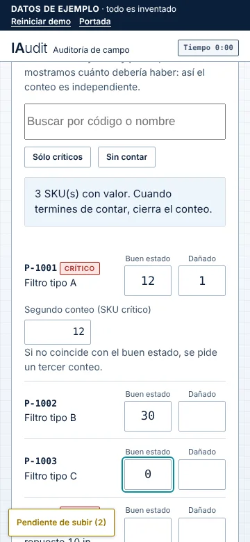
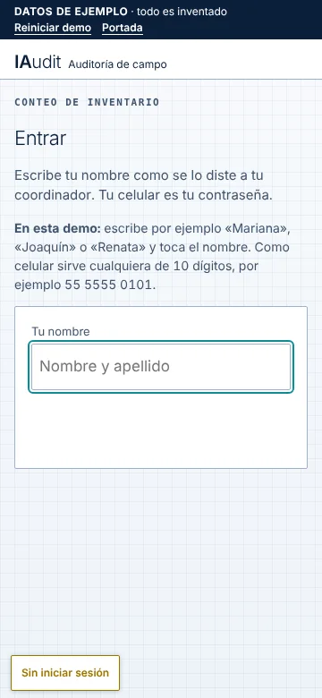
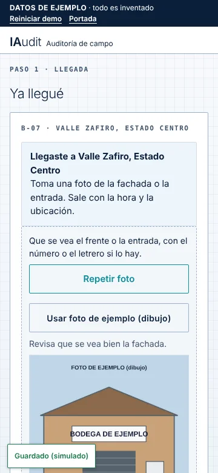
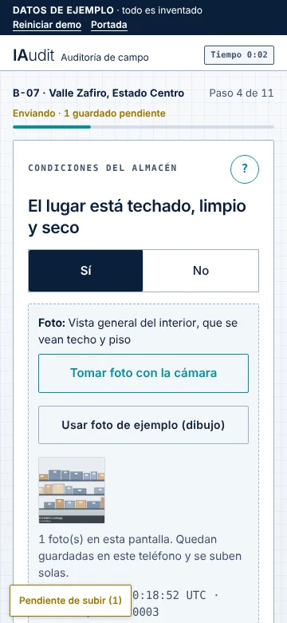
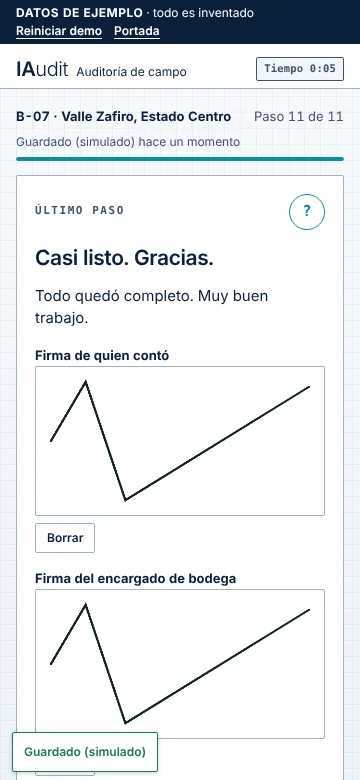
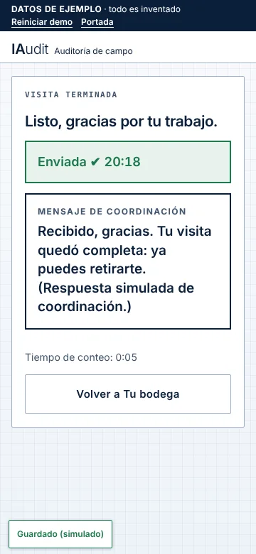
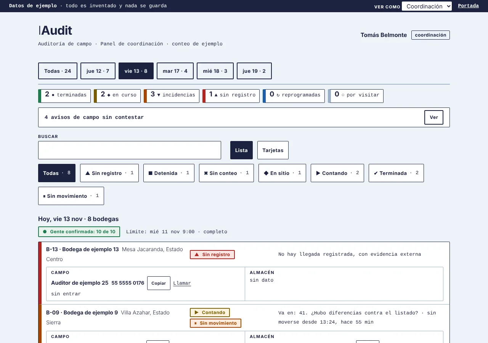
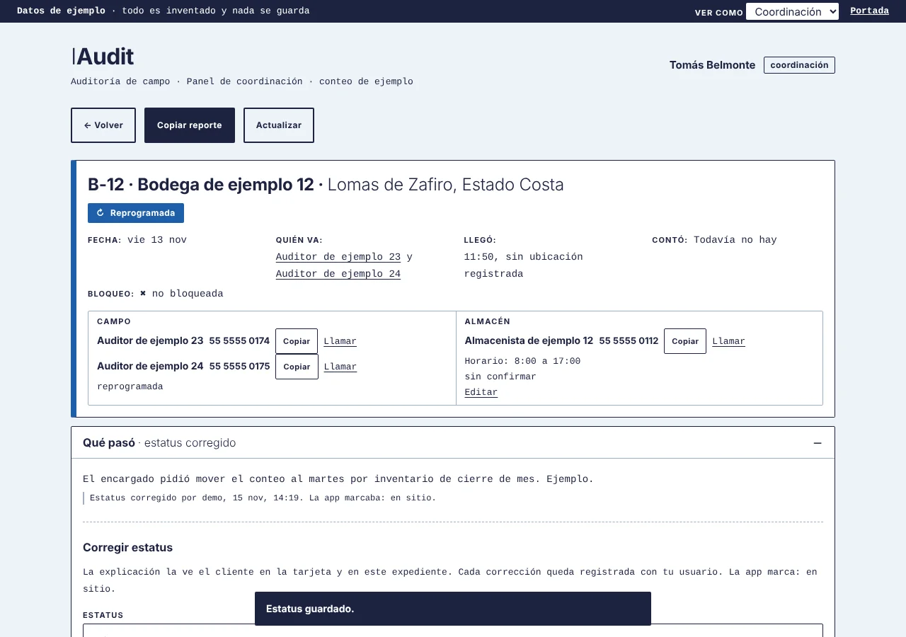
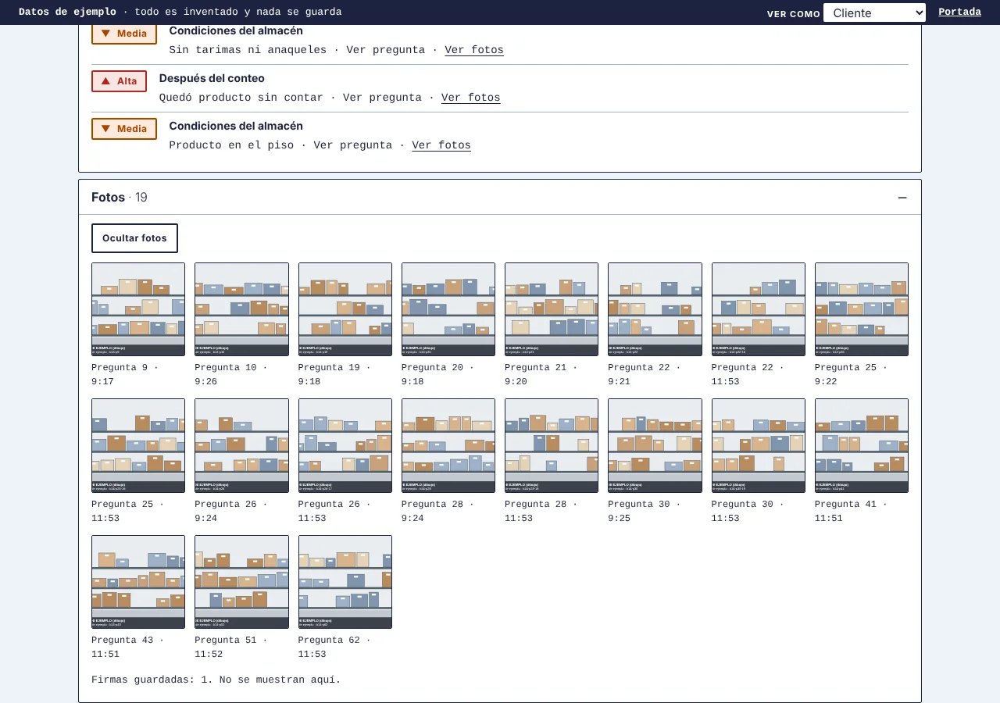
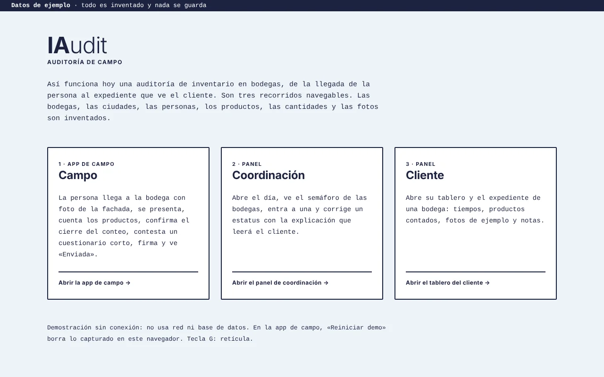

Auditorías con IA: ninguna visita se pierde.
Quien cuenta llega, toma foto, cuenta a ciegas y cierra con firmas desde su celular. Coordinación ve todo en un tablero y el cliente recibe su expediente. Todo lo que ves aquí es inventado.

Ya llegué, y se nota.
La foto de la fachada sale con hora y ubicación. Si no se puede entrar, la app guía las llamadas y deja constancia.


Un conteo independiente.
Quien cuenta no ve cuánto debería haber. Los productos críticos piden un segundo conteo, y si no coincide, un tercero.

Firmas, envío y listo.
Firma quien contó y firma quien recibe. El cierre ya no se puede perder: si no hay señal, se guarda en el teléfono y se sube solo.


Todas las bodegas en una vista.
Un semáforo por bodega y por día. Si algo cambió, coordinación corrige el estatus y queda la bitácora de quién y por qué.


El expediente, completo.
El cliente ve sus bodegas, los tiempos de cada visita, las fotos y lo que se contó, sin pedir reportes por correo.

Así va hoy.
Sale del cerebro de iwi: las órdenes de esta línea y lo que cada agente entregó. Trabajando ahora: IAudit, Kim.
El tablero pide tu cuenta de iwi.
- Demo IAudit con datos de ejemplo (tres recorridos: campo, coordinación, cliente)final · autonomía
- App de campo (conteo a ciegas en bodega)final · autonomía
- Panel de bodegas (una sola vista para iwi, cliente y agencia)final · autonomía
- Base de datos y seguridad por rolfinal · autonomía
- Video de campo para quien cuenta (43 segundos)borrador · autonomía
- Hoja de objeciones para la junta con el clientefinal · autonomía
- Reportes diarios de campo (estatus para la agencia y para el cliente)final · autonomía
Cómo llegó aquí.
La app se construyó con el equipo en campo: cada visita dejaba una lección y la siguiente versión la recogía.
- v4 · el primer recorrido
Demo navegable del cuestionario y el conteo.
- v7 · con contraseña
Ajustes de la primera revisión y pantallas de ejemplo sin nombre del cliente.

- v8 y el primer tablero
Tiempos por pantalla, ayuda en vivo, subida a la nube con respaldo en el teléfono, y el panel de coordinación con seguridad por rol.
- v15 · llegar bien
Entrada por nombre y celular, bodega con mapa, llegada con ubicación y conteo a ciegas explicado.
- v19 a v22 · en campo
Foto de fachada sellada con hora y ubicación, «No puedo entrar» con llamadas, y la pregunta «¿Sigues en la bodega?».
- v24 y v25 · el cierre no se pierde
Candado y reenvío desde el teléfono. En el tablero: semáforo, expediente con tiempos y estatus con bitácora.
- Demo IAudit
Tres recorridos con datos de ejemplo: campo, coordinación y cliente.
- v26
Contacto del almacén desde antes de llegar, confirmar la bodega correcta y críticos con cantidad o motivo.